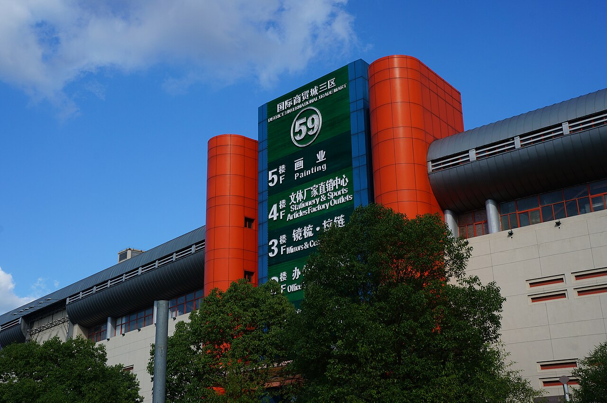

Quick answer: Alibaba is easier for direct communication, 1688 often shows lower domestic prices, and a Yiwu agent is best when you need mixed products, local checking, consolidation, QC, and export coordination.

1. The visible price is only the first cost
Alibaba prices often include an export-ready supplier margin. 1688 prices can look lower because the platform is built mainly for China domestic buyers. Yiwu Market pricing depends on stock, MOQ, booth relationship, packaging, and how much comparison work is done locally.
A buyer should compare the full landed cost: unit price, sample cost, domestic delivery, inspection, repacking, carton labels, export documents, international freight, customs, and the time spent fixing supplier mistakes.
| Buying route | Best for | Common hidden cost | Risk level |
|---|---|---|---|
| Alibaba | One product, export-ready supplier, English communication | Higher factory margin, sample freight, MOQ pressure | Medium |
| 1688 | Domestic China price comparison and supplier discovery | Translation, domestic payment, QC, export paperwork | High without local support |
| Yiwu agent | Mixed products, low MOQ tests, QC, consolidation, FBA prep | Transparent service fee, usually 3% to 5% | Lower when process is documented |
2. MOQ and mixed orders change the math
If you only need one standard product in high volume, Alibaba may be enough. If you want to test 20 to 50 units across many SKUs, Yiwu is usually more flexible. Many Yiwu suppliers carry ready-made stock and accept mixed orders, especially for household goods, accessories, gifts, packaging, stationery, toys, and small daily-use products.
A local agent can combine several suppliers into one sourcing plan. That is difficult when each Alibaba or 1688 supplier ships separately and only focuses on their own order.
3. Supplier risk is different on each channel
Alibaba offers English communication and trade tools, but listings may still look better than the real product. 1688 may give better product variety, but many suppliers do not speak English, do not handle export documents, and may not understand overseas packaging or label requirements.
A Yiwu sourcing agent adds local verification: checking company consistency, confirming stock, comparing several suppliers, requesting samples, taking photos, and warning you when the price is too low to match your quality target.
4. QC and consolidation are where agents earn their fee
Many buyers lose money after payment, not before it. Wrong colors, weak packaging, mixed SKUs, missing cartons, or damaged goods usually become visible when products arrive at the warehouse. YiwuGo Agent checks products before international shipping and sends photo or video evidence so you can make decisions earlier.
For multi-supplier orders, consolidation also reduces wasted shipping volume. One warehouse can receive goods from different booths, sort them, repack them, and prepare one cleaner shipment.
Which option should you choose?
- Choose Alibaba when you need one factory product, English sales support, and a simple direct order.
- Choose 1688 when you already have Chinese-language support and can manage domestic payment, QC, and export handling.
- Choose a Yiwu agent when you need mixed products, low MOQ testing, supplier comparison, QC, consolidation, FBA prep, or private label packaging.
Need help comparing suppliers?
Send your Alibaba, 1688, Yiwugo, or product photo list. YiwuGo Agent will help compare supplier options, target price, MOQ, quality risk, and shipping route.
Compare my sourcing options